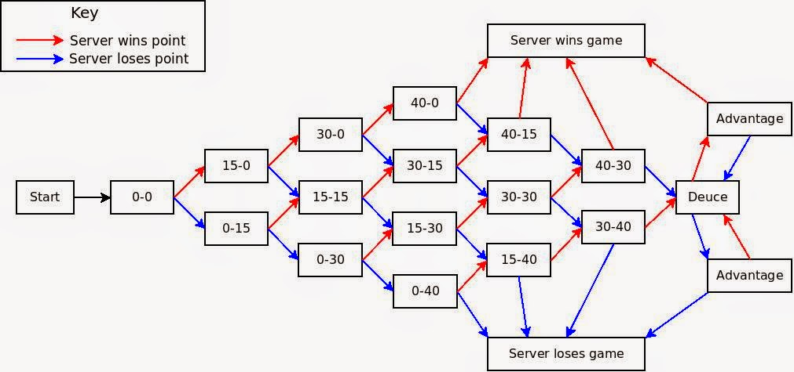

Framework
Each tennis match is made up of two to three sets. To win a set, you must win at least six games.
The games are scored starting at "love" (or zero) and go up to 40, but that's actually just four points. From love, the first point is 15, then 30, then 40, then game point, which wins the game.
Here is a recap in a single game:
